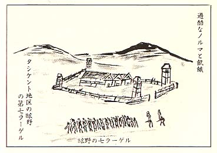

|
 隣りの一等兵は、珍らしく小樽出身の現役 兵で二十三才だった。年の割にはひどく衰弱 して、可哀想なほどに弱弱しかった。よく北 海道で愉しかった幼年時代の話をしてくれた。 母が漬けて食べさせた鰊(にしん)の漬け込み白菜は、 今も忘れられない母の味ですと云うのだった。 「そうだ、その鰊の白菜漬と、鮭の塩焼で、 炊き立ての白い飯を腹一杯喰って見たいもの だねー」 するとこの若槻一等兵は、生唾をこくりと 呑みこんで、母恋しい童顔になり、私を小父 さんと呼んで、郷愁を訴えるのだった。 「小父さん、ぼくを早くお母さんの許に帰 して下さいよ・・・」 と哀願する。彼の心根を思うと、また不 憫だった。 「うん、うん、よろしいとも、もうしばら くの辛抱だよ、頑張ってくれよ、お母さんの 顔を見るまでは、何としても死んではならな いぞー」 と子供に言って聞かせるように、慰めなだめ る外に、言葉を知らなかった。 翌日から私はこの少年兵とは別に、工場農 機具部品製作員となった。 戦場は螺子回しの小形スパナ仕上げだった。 ノルマは八時間で百ケ仕上げる仕事だった。 農機具旋盤工は先年第一〇七工場で、経験済 みだったが、今度は指揮官ではなく、一人の 労働者だった。 当日収めたノルマの成績は、翌日収容所食 堂に公表される仕組みとなっていた。 食堂の食卓は、公表の成績順に従って、優 秀席と不良席に峻別されていた。 優秀者食卓は、白布が掛けられて、食卓中 央部には、チュリップの飾り付けまでしてあ った。 優秀席の献立は、黒パン三百ｸﾞﾗﾑか、白米飯 か、その日で変る。副食は、肉類の炒め又は 魚の油揚げか、燻製品か、それにジャガ芋の スープ付となり豪華版だった。 それに引き比べ不良席の献立は、高梁(こうりょう)か粟か 燕麦かの五分粥と、カプスカ漬物の酢っぱい スープが、飯盒内蓋に半分位と決まっていた。 食堂入場の時は、先づ不良者が汚れた食卓 に着席し、続いて優秀者が入場して、花飾り の白布の掛った食卓に着席する。このとき不 良者は、一斉に優秀者に拍手を送って迎えな ければならない。 この拍手に合せて、炊事班が奏でるバンド （手製のバイオリンやマンドリン等）の伴奏 が始まるのである。 優秀労働者達は英雄気取りで得意満面と胸 を張り、豪華な食卓に着くのである。 拍手を送る側の不良労働者たちは、粥食の 食卓に身を縮め、屈辱感を噛みしめ乍ら、盛 大に拍手を送らなければならなかった。 スポロースキ幼年学校の豪華絢爛の食卓に は、倒底比較すべきものではなかったが、同 じ日本俘虜仲間同士の待遇が、かくまで食物 で、峻別されねばならないのかと思えば何と も辛いことだった。 食物の差別は、仲間の人心を撹乱し、離反 さす元兇となる。実に食い物の怨みと云う奴 は恐ろしいのである。 ここに献立表を誌して見よう。 A 献立表（優秀労働者のもの）
B 献立表（不良労働者のもの）
炊事班では、砂糖と油はまとめて腕によ りかけて、甘い食物を作ってくれる。 工場労働者として、優秀労働者となり、特 に指名されると、賃金の支給もあった。但し 毎月ノルマ百五十％以上が条件となり、賃金 は、ノルマに依るが、月平均百ルーブル程度 であった。 黒パン一ｷﾛｸﾞﾗﾑ 市販三ルーブル、牛乳、バタ ー、チーズなどもｷﾛ当り二～三ルーブルで手 に入り、ソ連人が購入してくれると云う。 毎月百ルーブルの収入があれば、敢えて早 期帰還を熱望する必要はない。 若い者はまだ五年位の我慢はできる筈だ。 その内に共和国娘との恋愛のチャンスは、幾 らでもあるだろう。 熟練工で賃金受給者達は、同室に二～三名 いた。彼等は血色がよく、肥っていた。そして 優越感に満ち満ちて、同じ仲間の羨望の的だった。 この熟練工で賃金受給者は、一ｷﾛの黒パン を枕にして寝ている豪奢な者もいた。聞くと ころによると、彼らは収容所外に、特に自由 外出をも許された者もいた。彼らの一人は、 ノモンハンの戦で、ソ連の捕虜となった勇士 と遇然に行き合ったと云う。そのときの模様 を語ってくれたのだった。 「彼等ノモンハン勇士は色々苦労があった が、生き残れた。彼等も若い青春期を迎えて いたので、共和国娘と結婚して、いまは共和 国市民となり、平和な日日を送っている。」 と云うのであった。そうして声を落して、 「お前らは、俘虜でもおれ等と異って、日 本へ帰れるから羨ましいよ、あまり長く話す と怪しまれるから、この位でな。」 と云って淋しく笑って立ち去ったと言うの であった。 真実としたら、これも戦争のもたらす悲し い業（ごう）だと思うのだった。 私の工場作業のスパナ仕上げ労働は、毎日 成績不良で、ノルマは五十％か六十％留りで あった。 王様と乞食ほど違う食物に苦しめられて、 こんな辛い思いをする位なら、一層のこと、 ノモンハン勇士のように、共和国娘と結婚し て、空腹から逃れたい。 あの心優しいキリギスのマダムのような人 と一緒に暮して、共和国人になった方が、マ ホメットの慈悲を受けられて、諦めもつこう と、妄想にとりつかれることもあった。 ノルマ作業は、鋳型から製作されたスパナ を固定器にはめ込みヤスリで磨き、ノギスの規格 に合せて仕上げることになっていた。 ノギスの規格との差が、0.5ミリ以内で なければ、合格品とはならない。それ以上の 誤差は、ブラック（不合格品）となる。 ヤスリで削り過ぎることが多く、この場合は金 槌で叩いて縮める。今度は縮まりすぎて、ま たヤスリで磨く、このような操作を二～三回繰り 返すと、鋳型のスパナは変型して、両端がぽ つきり折れてしまう。 そんなことをしていると、製品一ケの製作 所要時間は、普通約五分のところを、十分以 上となり、就労時間は刻々と迫り、気はあせ り、疲れのあまり転倒しそうになる。 作業終了まで製品は、やっと毎日のように 五十個内外だった。その中に不合格品があっ たら、目も当てられないのである。 検査官は何の容赦もなく、プロホ、ラボー トと怒声を上げて罵しるのである。 このとき想い浮ぶのは、高梁粥のダブダブ と、優秀者食卓常に送る拍手の響である。思 えば屈辱と無念さが、ひしひしと身に迫るのだっ た。 隣で同じ作業に頑張っていたのは、倉堀少 尉だった。幸か不幸か、彼も私と同じように 手先の不器用な男で、ノルマを達成できず、 毎日辛い思いをしていた。ノルマ向上の奇策 名案はないものかと、思いは皆同じだった。 こんな模索をしている中で、天祐なる哉、 我らの作業場の真向いの倉庫は、スパナ類の 合格品保管倉庫になっていた。 昼間も夜間も物品搬出入のため、大既は出 入口扉は半開きで開け放し、中の様子が丸見 えだった。 倉庫監視兵の巡回は、夜間は二～三回で、 夜中の零時以後は、殆んど巡回はしていない と、確認できた。 こんな偵察をした私と倉掘は、あの保管倉 庫の製品を、四～五百個ばかり失敬すると、問 題は立ち所に解決するのではないかと、二人 で笑い合った。冗談は段々と真剣になった。 「今のままでは、屈辱感と衰弱死があるのみ だ。それでは余りにも無為無策、馬鹿らしい 敗北だ。 花の食卓を羨み屈辱に泣く位なら、ここは 大奮起一番、挑戦の時期だ、窮余の一策を敢 行しようと」 戦略意見は一致した。この作戦は確に実行 可能、成功疑いなしと確認し合ったのであった。 次は方法と決行時期だった。 月のない闇夜を決行日ときめ、戦利品の隠 し場所の選定、戦利品の運搬用具の準備など 手筈万端整った。 時は釆た。当夜は漆黒の闇夜だった。滅多 に降らない小雨まで、ばらつき出し絶好の決 行天候状態となった。 巡回の監視兵は午前零時前一回巡回したの を確認し、それっきり朝までの巡回はなしと、 二人で判断して、ほくそえんだ。 スパナの規格品は何程類かあった。折角戦 利品として獲得しても、規格が違えば通用し ない。これこそ九仭の功を、一簣に欠くと言い 伝えのとおりだ。見本品一ケを持って行って 点検すれば間違いなしだ。 私は倉堀の合図に従い、麻袋を手に匍匐前 進し目的場所に着いた。昼間の偵察のとおり、 製品は山とあった。規格品も間違いなしだと 闇夜にすかして確認した。 麻袋に一杯詰め込んで、無事生還、倉掘が 掘っていた隠し穴に埋めることができた。 この問、僅か三十分の隠密決死行動で大戦 果を納めたのだった。凱歌はあがつた。 当夜の私の製品は六十五個、穴から四十個 の補てん品で計百五個、倉掘分は、三十個補 てんで計百三個となった。 朝の終業ベルが工場内に、けたたましく鳴 り渡った。 製品検査宮は例の如く、婦人検査官を先頭 に男子検査官二人と共に、ノギスを持って、 個人別ノルマの検収にかかった。 「ニツタ、クラホリ、ラボート、一オーチン ハラッショー、ストープロセント（百％）」 と大声で褒めてくれた。 念願を達して、白布の掛った花飾りの食卓 に、拍手とバンドの奏でる音曲を背中に聞き ながら、胸を反らして堂々と着席、われなが ら得意満面で満足感に浸った。 優秀労働者食卓の白米五百ｸﾞﾗﾑ、肉の空揚げ 三百ｸﾞﾗﾑ、スープ（ジャガ芋）五百ｸﾞﾗﾑを満喫飽 食して、腹の虫をびっくりさせ、唾液は胃袋 をかけ巡った。 「ざまー見ろ、虎穴に入らざれば、虎児を 得ずとは、このことや。」 二人は人知れず、快哉を叫び、笑いが止ま らなかった。只お互に眼だけの暗号電波を送 信し、軍事秘密の漏洩を防いだのである。 ノルマ補てん品の隠匿物資スパナは二十日 分から一ケ月分位は充分あった。その内に各 自の技量向上と相まって、当分の間は優秀席 での、贅沢な給食が保証されることになった。 これからは、寝台に横になって休むときも、 身を縮めて腹の皮をよじることもなく、大の字 になって高いびきで寝れるようになった。 しかし少年の若槻一等兵は、日毎に衰弱の度 を増し、肉の空揚げ一片位の栄養補給位では 「焼け石に水」だった。 お母さんの、白菜漬の話もしなくなってし まった。空ろな瞳孔で、虚空を見つめ、 「あッお母さんが迎えに釆た。あッお母さ んがきた・・・・」 こんな澹言を繰り返すのだった。周囲の戦 友たちは、亡者に取り憑れたように、黙って しまった。 若槻の痩せ窪んだ眼球は、閉じたまま、二 度と開かなかった。 広野に建てられた第七ラーゲルの北端にあ る、あの、小高い丘の片隅の墓の中で、今も 母を慕い母を呼んでいるだろうと思うと、胸 が痛んでならない。 今まで数多くの戦友を、野辺に葬送したが、 若槻は少年兵だっただけに、一層哀れでなら ない。 私は四十才台を過ぎていたので、二十才台 の兵隊からは何時も「小父さん」とよく愛称 されていた。そうして時によっては、 「小父さんは、日毎に影が薄くなっている よ。」 と危ぶんで冷かしてくれる者もいた。そう 言ってくれた若槻が、こんなに早く若い生命 の灯を消すとは、思いもよらなかった。 彼の冥福を祈ろうと、数個の石を墓石代り に積んでやった。 「友は野末の石の下」と軍歌が切々と胸を 打った。 昭和二十二年、広野に野分けが吹き、パミ ール高原から冷たい風が下りてきた。 ノルマ達成に決死の覚悟で倉庫侵入行動を 共謀した倉堀少尉とも、あの豪華な花の食卓 の愉しかった一刻の想い出を談笑しながら、 お互は東西に永別する日がきた。 私はコルホーズ（集団農場）に転ずることに なった。 今日も工場での不良労働者たちは、水粥を すすりながら、辛い思いで優秀労働者たちに、 拍手を送っているだろう。そうしてバンドの 奏でる音響が、複雑な不協和音となって、戦 友同士を悩ませているだろう。その音響が何 時までも耳底に残って消えないのである。 |